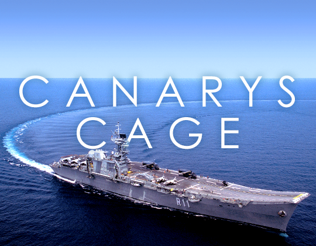

Original Concept By: Miguel Molina
Date: 12 October 2005
Location: Canary Islands / Moroccan Coast
Playable Side: Spain
Duration: 2 days, 6 hours
The year 2005 was a tumultuous time in North Africa, as a succession of radical Islamist parties came to power; first in Algeria and then across Africa. By October the governments of Algeria, Egypt and Libya--along with the historically moderate governments of Tunisia and Morocco--would unite under the banner of the North African Islamic League; N.A.I.L.
Spain’s relationship with Morocco had deteriorated after the Perejil Island Crisis of 2002 and the failure of a referendum on the status of the Western Sahara. With the backing of the of fellow N.A.I.L. states Morocco began to press her claims to the Spanish held cities of Ceuta and Melilla. In response to the exacerbated tensions Spain increased her military garrison in the two cities. Just as tensions appeared to relax a secretly assembled N.A.I.L. amphibious force set sail and, overcoming local resistance, seized the Canary Islands.
Now, while the invasion is discussed in NATO and the UN, Spain mobilizes her military to retake the Islands.